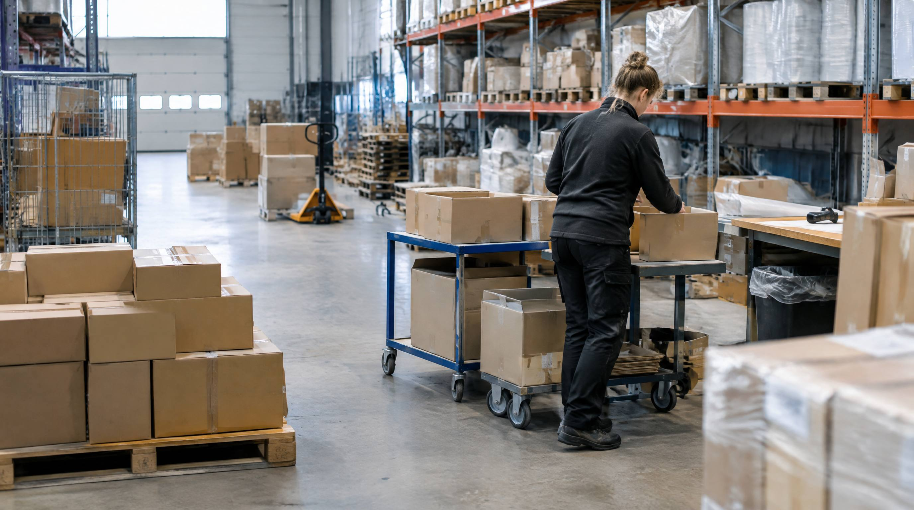

Ansættelse er en af de dyreste og mest tidskrævende beslutninger. Gør du det for tidligt, betaler du for kapacitet du ikke bruger. For sent, og du mister kunder. Her er de objektive kriterier.
Hvad koster en ansættelse?
En ny lagermedarbejder koster mere end lønnen. Samlet rekrutteringsomkostning er 30.000-50.000 kr. per medarbejder: opslag, screening, onboarding, oplæring og produktivitetstab i de første 4-8 uger.
Hertil: I en branche med 43% annual turnover er det ikke usandsynligt, at du gør det igen inden for 2 år. Det betyder, at ansættelse skal overvejes nøje, og at alternativer (procesoptimering, WMS, vikarbureau for spidsbelastning) bør evalueres først.
👉 Skalerer din webshop? Se hvordan SmartPack understøtter vækst
Hvornår er bemanding et problem?
Du har et bemandingsproblem, når:
- Ordrer per medarbejder overstiger kapaciteten: En effektiv plukker håndterer ca. 110 picks/time, og det er også den standardforventning SmartPack regner med indtil du selv retter den. Kender du dit tal?
- Overarbejde er normen, ikke undtagelsen: 1-2 dage overarbejde om måneden er acceptabelt. Dagligt overarbejde er et signal
- Fejlraten stiger med volumen: Træthed og pres giver fejl. Stiger fejlraten ved høj volumen, er det bemandingsproblem
- Leveringstiden er truet: Ordrer, der ikke kan pakkes inden cutoff, fordi kapaciteten er for lav
Beregn dit behov
Kapacitetsberegning:
- Gennemsnitlige ordrelinjer per ordre × ordrer/dag = daglige plukkeopgaver
- Picks/time (dit tal) × arbejdstimer/dag = kapacitet per medarbejder
- Daglige plukkeopgaver ÷ kapacitet per medarbejder = behov
Eksempel: 300 ordrer/dag × 2,5 linjer/ordre = 750 pluk/dag. Med SmartPacks standardforventning på 110 pluk/time × 7,5 timer er kapaciteten 825 per medarbejder. 750 ÷ 825 = 0,91, altså én plukker med luft. Ligger I på 70 pluk/time, som et uoptimeret lager ofte gør, er kapaciteten 525, og så er tallet 1,43, altså to. Det er derfor det betaler sig at måle sit eget tal frem for at bruge vores.
Black Friday-trigger (6× volumen)
Ved 200 ordrer/dag normal = 1.200 ordrer/dag Black Friday.
Uden forberedelse: Tolv vikarer skal rekrutteres akut og læres op undervejs. Fejlraten lander på 3,8% af 1.200 ordrer i fem dage, altså 228 ordrer der skal gøres om, 79.800 kr. Oplæringen er fem dage per hoved, 12 × 37,5 timer × 300 kr. = 135.000 kr. I alt 214.800 kr.
Med WMS og optimering: Eksisterende team håndterer 880 ordrer/dag. Rekrutter 4 vikarer (ikke 12) med 1,5 dags onboarding. Fejlrate: 0,8%. Cost: 89.000 kr. Forskel: 253.360 kr. sparet.
Typiske fejl
- Ansætter frem for at optimere, stiger picks/time med 35% via WMS-optimering, falder kapacitetsbehovet tilsvarende.
- Ansætter fast til sæsonbehov, Black Friday kræver 6× normal kapacitet. Løsningen er vikarer, ikke fast ansættelse.
- Glemmer onboarding-tid, en ny medarbejder er ikke 100% produktiv fra dag 1. Planlæg for 4-8 ugers onboarding med reduceret kapacitet.
Sådan gør du det rigtigt
- Mål picks/time per medarbejder ugentligt, det er dit primære kapacitetsmål.
- Optimer inden du ansætter, har du WMS? Har du optimeret layout? Er batch picking implementeret? Gør disse ting først, de kan øge kapaciteten 30-40% uden ny ansættelse.
- Brug vikarer til spidsbelastning, faste ansættelser til variable volumener er dyrt.
SmartPacks understøttelse
SmartPack giver dig realtids-data på picks/time per medarbejder, ordrer per time og kapacitetsudnyttelse. Du kan se præcist, hvornår kapaciteten er maxed og beregne, hvornår en ny ansættelse er nødvendig, frem for at gætte. Onboarding af nye medarbejdere er hurtig: SmartPacks mobilguidance guider nye plukkere til korrekte lokationer fra dag 1.
- Luksushund: 20 pct. flere ordrer, samme bemanding
- Uniq Perler: 2-3x omsætning med samme antal ansatte